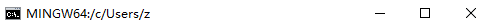
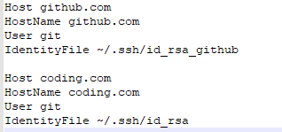

介绍
github有一个GitHub Pages可以给githuber用来建立自己的个人主页，我们就是利用这个来借由hexo搭建博客，并把生成的静态文件发布到自己的GitHub Pages上，这样就可以简单的实现在GitHub上搭建个人博客的目的。
github上的准备
首先需要一个github账号，没什么好说的，输入用户名，输入常用的邮箱地址和密码注册成功后，点击右上角的加号，点击New repository创建新仓库
在仓库名中填自己github的用户名.github.io因为你的GitHub Pages的链接就是这个，记得项目一定要是公开状态，否则在吧项目设置为GitHub Pages的时候需要购买收费服务，剩下只要点击创建即可。
为了方便项目的管理，可以再新建一个仓库，用来管理你自己的hexo项目
本地开发环境的搭建
git
关于git的安装不作赘述，相关教程可以自行搜索，为了方便管理，可以使用ssh来提交代码。
打开Git Bash，输入$ ssh-keygen -t rsa -C "注册github使用的邮箱"回车，他会提示你密钥存储的位置和默认文件名:

你可以自定义命名，但要注意Git Bash打开的路径位置，一般在用户根目录，你需要把密钥对存储在根目录的.ssh文件夹下

回车之后就会要求设置密码和重新输入一遍，可以按回车跳过。如果你在.ssh文件夹下创建了不止一个密钥，可以在.ssh文件夹下创建config文件，进行以下配置，这样就可以自动使用对应私钥完成.ssh连接了
1 | Host [只是个名字跟下面一样就行了] |
配置完后类似这样：

然后打开私钥对应的公钥文件，也就是后缀为.pub的文件,复制里面所有内容，打开你的github，点击右上角你的头像，点击Settings
然后打开SSH and GPG keys
点击New SSH key
或者直接点击这里然后输入Title，可以随便取个名字，在把公钥粘贴到Key中，点击Add SSh key保存即可
Node.js
也是一样，可以自行搜索Node.js的安装教程，可以通过使用指令$ node -v查看安装的版本
Hexo
安装
以上配置完成后，就可以进行Hexo的安装了，打开命令行，执行$ npm install -g hexo-cli即可进行安装
配置
hexo安装后根目录有一个_config.yml,部分配置解释如下，详细内容参看官网，博客发布如果使用git，需要安装hexo-deployer-git$ npm install hexo-deployer-git --save
1 | # Site |
创建Hexo项目
执行以下三条指令，就可以完成项目的创建
1 | $ hexo init <你的项目路径> |
等待一下，就可以完成项目的创建
注意：创建项目时，init的位置必须没有任何文件，否则会报错，你可以先移出你的文件，等新建完成后可以再移入
更改Hexo默认makedown解析插件
Hexo 默认的markdown解析插件是hexo-renderer-marked，类似下标H2O,上标X2以及数学公式,下划线和删除线无法使用的，或者流程图也无法使用
1 | $ npm un hexo-renderer-marked --save #卸载原解析器 |
安装完毕后在Hexo项目的_config.yml中添加配置
1 | # Markdown-it config |
配置分为简单配置和高级配置，以上是高级配置详细内容可以查看hexo-renderer-markdown-it GitHub Wiki。流程图是依赖于flowchart.js 实现的,以下为操作模块语法
| 操作模块 | 说明 |
|---|---|
| start | 开始 |
| end | 结束 |
| operation | 普通操作 |
| condition | 判断 |
| inputoutput | 输入输出 |
| subroutine | 子任务 |
示例流程图的代码,这一流程图特性基于flowchart.js
1 | ···flow #需要把·换成` |
数学函数是使用KaTeX实现的，渲染的时候需要添加css文件才行，可以把引用添加到需要用到的页面，或者直接放在选用主题的 /layout/_partial 下合适的文件中
1 | <link rel="stylesheet" href="https://cdnjs.cloudflare.com/ajax/libs/KaTeX/0.10.0/katex.min.css"> |
主题的安装
主题安装十分简单可以访问官网的主题页面选择喜欢的主题，或者在其他地方找到可用主题，按照提示步骤安装即可，然后在根目录下的_config.yml中，把theme修改为你选用的主题名,主题的相关配置项，可以参考主题的相关文档，配置。
撰写博客
hexo默认使用markdown渲染文章，markdown的语法可以参考这里，里面有详细的描述，如果你使用VSCode或者Atom可以参考这里安装插件，方便你编写博客，或者里面也有一些进阶的markdown使用，也可以参考说明。新建一篇文章可以执行指令$ hexo new [title]，你会发现 /source/_posts 文件夹下会新建一个以你的文章标题命名的.md文件，打开文件就可以写作了。每篇文章如果需要使用本地的资源文件比如图片，可以把文件放在根目录下的/source/images,在文章中可以直接使用插入图片，如果希望每篇文章都可以独立拥有资源文件夹，可以把配置文件中的post_asset_folder修改为true,当你使用$ hexo new [title]新建文件时你会发现 /source/_posts 下自动生成了一篇文章和一个相同名字的文件夹，只要把资源文件放入文件夹，就可以直接在文档中使用插入图片了。更多相关内容可以访问官网查看。
发布文章
当你想要预览博客显示效果的时候，可以输入指令$ hexo server,然后就可以访问http://localhost:4000查看了，如果指令无法使用，可以输入$ npm install hexo-server --save安装server插件之后再次启动。
一般情况下都是4000端口，如果不是，以控制台提示为准
在发布博客前，需要生成静态页面，可以使用$ hexo generate或者使用$ hexo generate --watch,后者会监视文件变动，只有变动的文件才会写入。执行指令后，你会发现根目录下生成了也该public文件夹，这就是生成的静态页面文件，你可以手动部署，也可以执行$ hexo deploy部署博客到你的github pages上了，如何配置deploy，可以查看这里
生成静态页面文件后，可以使用
$ hexo server -s使用静态模式启动服务器，该模式下服务器只会解析public文件夹下的内容
总结
由于是第一次写博客，所以markdown也是在搭建hexo的时候才接触到，导致关于markdown以及相关插件的问题，花了大量的时间采坑，也着实深刻的发现自己的不足。还有GitHub上单词提交限制100M,单项目限制1G,单账户限制5G,（免费帐户）所以类似图片等资源文件最好使用图床或者类似的服务来代替，以防未来出现资源文件占用过大容量的问题。